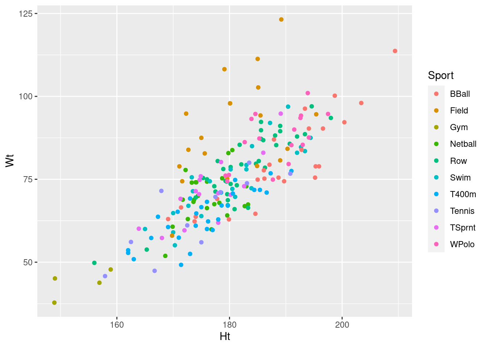

A phone company commissioned a survey of their customers’ satisfaction with their mobile devices. The responses to the survey were on a so-called Likert scale of “very unsatisfied”, “unsatisfied”, “satisfied”, “very satisfied”. Also recorded were each customer’s gender and age group (under 18, 18–24, 25–30, 31 or older). (A survey of this kind does not ask its respondents for their exact age, only which age group they fall in.) The data, as frequencies of people falling into each category combination, are in link.
Solution
##
## ── Column specification ─────────────────────────────────────────────────────
## cols(
## gender = col_character(),
## age.group = col_character(),
## very.unsat = col_double(),
## unsat = col_double(),
## sat = col_double(),
## very.sat = col_double()
## )With multiple columns that are all frequencies, this is a job for
pivot_longer:
mobile %>%
pivot_longer(very.unsat:very.sat,
names_to="satisfied",
values_to="frequency") -> mobile.long
mobile.longYep, all good. See how mobile.long contains what it should?
(For those keeping track, the original data frame had 8 rows and 4
columns to collect up, and the new one has \(8\times 4=32\) rows.)
Solution
I looked at mobile.long in the previous part, but if you
didn’t, look at it here:
My intended response variable is what I called satisfied.
This is chr or “text”, not the factor that I
want.
Solution
My intended response satisfied is text, not a factor, so
I need to do this part.
The hint is to look at the column satisfied in
mobile.long and note that the satisfaction categories
appear in the data in the order that we want. This is good
news, because we can use fct_inorder like this:
If you check, by looking at the data frame, satis is
a factor, and you can also do this to verify that its levels
are in the right order:
## [1] "very.unsat" "unsat" "sat" "very.sat"Success.
Extra: so now you are asking, what if the levels are in the wrong order in the data? Well, below is what you used to have to do, and it will work for this as well. I’ll first find what levels of satisfaction I have. This can be done by counting them, or by finding the distinct ones:
or
If you count them, they come out in alphabetical order. If you ask for
the distinct ones, they come out in the order they were in
mobile.long, which is the order the columns of those
names were in mobile, which is the order we want.
To actually grab those satisfaction levels as a vector (that we will
need in a minute), use pluck to pull the column out of the
data frame as a vector:
## [1] "very.unsat" "unsat" "sat" "very.sat"which is in the correct order, or
## [1] "sat" "unsat" "very.sat" "very.unsat"which is in alphabetical order. The problem with the second one is
that we know the correct order, but there isn’t a good way to code
that, so we have to rearrange it ourselves. The correct order from
v2 is 4, 2, 1, 3, so:
## [1] "very.unsat" "unsat" "sat" "very.sat"## [1] "very.unsat" "unsat" "sat" "very.sat"Either of these will work. The first one is more typing, but is
perhaps more obvious. There is a third way, which is to keep things as
a data frame until the end, and use slice to pick out the
rows in the right order:
## [1] "very.unsat" "unsat" "sat" "very.sat"If you don’t see how that works, run it yourself, one line at a time.
The other way of doing this is to physically type them into a vector, but this carries the usual warnings of requiring you to be very careful and that it won’t be reproducible (eg. if you do another survey with different response categories).
So now create the proper response variable thus, using your vector of categories:
satis has the same values as satisfied, but its
label ord means that it is an ordered factor, as we want.
weights!Solution
(i):
For (ii) and (iii), update is the thing (it works for any
kind of model):
We’re not going to look at these, because the output from
summary is not very illuminating. What we do next is to try
to figure out which (if either) of the explanatory variables
age.group and gender we need.
drop1 on your model containing both explanatory
variables to determine whether you can remove either of them. Use
test="Chisq" to obtain P-values.Solution
drop1 takes a fitted model, and tests each term in
it in turn, and says which (if any) should be removed. Here’s how it goes:
## Single term deletions
##
## Model:
## satis ~ gender + age.group
## Df AIC LRT Pr(>Chi)
## <none> 1101.8
## gender 1 1104.2 4.4089 0.035751 *
## age.group 3 1109.0 13.1641 0.004295 **
## ---
## Signif. codes: 0 '***' 0.001 '**' 0.01 '*' 0.05 '.' 0.1 ' ' 1The possibilities are to remove gender, to remove
age.group or to remove nothing.
The best one is “remove nothing”, because it’s the one on the output with the smallest
AIC. Both P-values are small, so it would be a mistake to remove
either of the explanatory variables.
anova to decide whether we are justified in
removing gender from a model containing both gender
and age.group. Compare your P-value with the one from drop1.Solution
This is a comparison of the model with both variables
(mobile.1) and the model with gender removed
(mobile.3). Use anova for this, smaller
(fewer-\(x\)) model first:
## Likelihood ratio tests of ordinal regression models
##
## Response: satis
## Model Resid. df Resid. Dev Test Df LR stat. Pr(Chi)
## 1 age.group 414 1092.213
## 2 gender + age.group 413 1087.804 1 vs 2 1 4.40892 0.03575146The P-value is (just) less than 0.05, so the models are significantly
different. That means that the model with both variables in fits
significantly better than the model with only age.group, and
therefore that taking gender out is a mistake.
The P-value is identical to the one from drop1 (because they
are both doing the same test).
anova to see whether we are justified in removing
age.group from a model containing both gender and
age.group. Compare your P-value with the one from
drop1 above.Solution
Exactly the same idea as the last part. In my case, I’m comparing
models mobile.2 and mobile.1:
## Likelihood ratio tests of ordinal regression models
##
## Response: satis
## Model Resid. df Resid. Dev Test Df LR stat. Pr(Chi)
## 1 gender 416 1100.968
## 2 gender + age.group 413 1087.804 1 vs 2 3 13.16411 0.004294811This one is definitely significant, so I need to keep
age.group for sure. Again, the P-value is the same as the one
in drop1.
Solution
I can’t drop either of my variables, so I have to keep them both:
mobile.1, with both age.group and gender.
predict three things: the fitted model that contains both
age group and gender, the data frame that you read in from the file
back in part (here) (which contains all the combinations of age group
and gender), and an appropriate type.Solution
My model containing both \(x\)s was mobile.1, the data frame
read in from the file was called mobile, and I need
type="p" to get probabilities:
probs <- predict(mobile.1, mobile, type = "p")
mobile %>%
select(gender, age.group) %>%
cbind(probs)This worked for me, but this might happen to you, with the same commands as above:
## Error in MASS::select(., gender, age.group): unused arguments (gender, age.group)Oh, this didn’t work. Why not? There don’t seem to be any errors.
This is the kind of thing that can bother you for days. The
resolution (that it took me a long time to discover) is that you might
have the tidyverse and also MASS loaded, in
the wrong order, and MASS also has a select (that
takes different inputs and does something different). If you look back
at part (here), you might have seen a message there when you
loaded MASS that select was “masked”. When you
have two packages that both contain a function with the same name, the
one that you can see (and that will get used) is the one that was
loaded last, which is the MASS select (not the one we
actually wanted, which is the tidyverse select). There are a
couple of ways around this. One is to un-load the package we no longer
need (when we no longer need it). The mechanism for this is shown at
the end of part (here). The other is to say explicitly
which package you want your function to come from, so that there is no
doubt. The tidyverse is actually a collection of
packages. The best way to find out which one our select comes
from is to go to the Console window in R Studio and ask for the help
for select. With both tidyverse and MASS
loaded, the help window offers you a choice of both selects;
the one we want is “select/rename variables by name”, and the actual
package it comes from is dplyr.
There is a third choice, which is the one I prefer now: install and load the package conflicted. When you run your code and it calls for something like select that is in two packages that you have loaded, it gives an error, like this:
Error: [conflicted] `select` found in 2 packages.
Either pick the one you want with `::`
* MASS::select
* dplyr::select
Or declare a preference with `conflict_prefer()`
* conflict_prefer("select", "MASS")
* conflict_prefer("select", "dplyr")Fixing this costs you a bit of time upfront, but once you have fixed it, you know that the right thing is being run. What I do is to copy-paste one of those conflict_prefer lines, in this case the second one, and put it before the select that now causes the error. Right after the library(conflicted) is a good place. When you use conflicted, you will probably have to run several times to fix up all the conflicts, which will be a bit frustrating, and you will end up with several conflict_prefer lines, but once you have them there, you won’t have to worry about the right function being called because you have explicitly said which one you want.
This is a non-standard use of cbind because I wanted to grab
only the gender and age group columns from mobile first, and
then cbind that to the predicted probabilities. The
missing first input to cbind is
“whatever came out of the previous step”,
that is, the first two columns of mobile.
I only included the first two columns of mobile in the
cbind, because the rest of the columns of mobile
were frequencies, which I don’t need to see. (Having said that, it
would be interesting to make a plot using the observed
proportions and predicted probabilities, but I didn’t ask you for that.)
This is an unusual predict, because we didn’t have to make a
data frame (with my usual name new) containing all the
combinations of things to predict for. We were lucky enough to have
those already in the original data frame mobile.
The usual way to do this is something like the trick that we did for getting the different satisfaction levels:
genders <- mobile.long %>% distinct(gender) %>% pluck("gender")
age.groups <- mobile.long %>%
distinct(age.group) %>%
pluck("age.group")This is getting perilously close to deserving a function written to do it (strictly speaking, we should, since this is three times we’ve used this idea now).
Then crossing to get the combinations, and then
predict:
new <- crossing(gender = genders, age.group = age.groups)
new
pp <- predict(mobile.1, new, type = "p")
cbind(new, pp)This method is fine if you want to do this question this way; the way I suggested first ought to be easier, but the nice thing about this is its mindlessness: you always do it about the same way.
Solution
I had both explanatory variables being significant, so I would
expect to see both an age-group effect and a gender effect.
For both males and females, there seems to be a decrease in
satisfaction as the customers get older, at least until age 30 or
so. I can see this because the predicted prob. of “very satisfied”
decreases, and the predicted prob.
of “very unsatisfied” increases. The 31+ age group are very
similar to the 25–30 group for both males and females. So that’s
the age group effect.
What about a gender effect? Well, for all the age groups, the males
are more likely to be very satisfied than the females of the
corresponding age group, and also less likely to to be very
unsatisfied. So the gender effect is that males are more satisfied
than females overall. (Or, the males are less discerning. Take your pick.)
When we did the tests above, age group was very definitely
significant, and gender less so (P-value around 0.03). This
suggests that the effect of age group ought to be large, and the
effect of gender not so large. This is about what we observed: the
age group effect was pretty clear, and the gender effect was
noticeable but small: the females were less satisfied than the
males, but there wasn’t all that much difference.
Now we need to “unload” MASS, because, as we saw, it has a
select that we don’t want to have
interfering with the dplyr one:
## Warning: 'MASS' namespace cannot be unloaded:
## namespace 'MASS' is imported by 'PMCMRplus', 'lme4' so cannot be unloaded* Abortion is a divisive issue in the United States, particularly among Christians, some of whom believe that abortion is absolutely forbidden by the Bible. Do attitudes towards abortion differ among Christian denominations? The data in link come from the American Social Survey for the years 1972–1974. The variables are:
year: year of survey, 1972, 1973 or 1974
religion: Christian denomination: Southern Protestant,
other Protestant, Catholic.
education: years of education: low (0–8), medium
(8–12), high (more than 12).
attitude towards abortion (response). There were three abortion
questions in the survey, asking whether the respondent thought that
abortion should be legal in these three circumstances:
when there is a strong possibility of a birth defect
when the mother’s health is threatened
when the pregnancy is the result of rape.
A respondent who responded “yes” to all three questions was recorded as having a Positive attitude towards abortion; someone who responded “no” to all three was recorded as Negative, and anyone who gave a mixture of Yes and No responses was recorded as Mixed.
frequency The number of respondents falling into the
given category combination.Solution
The columns are aligned with each other but not with the headings,
so read_table2 it has to be:
##
## ── Column specification ─────────────────────────────────────────────────────
## cols(
## year = col_double(),
## religion = col_character(),
## education = col_character(),
## attitude = col_character(),
## frequency = col_double()
## )This looks good. religion, education, attitude are correctly
categorical with apparently the right levels, and frequency
is a (whole) number.
The only weirdness is that year got read in as a number, because it
was a number. read_table2 had no way of knowing that
we might have wanted to treat this as categorical. But you don’t need to
observe that.
glm with family="binomial"
polr (from package MASS)
multinom (from package nnet)
Why should we be using polr for this analysis?
Explain briefly.
Solution
It all comes down to what kind of response variable we have. Our
response variable attitude has three categories that can
be put in order: negative, mixed, positive (or the other way
around). So we have an ordinal response, which calls for
polr. You can eliminate the other possibilities, because
glm requires a two-category response and
multinom requires a nominal response whose categories do
not have a natural order.
In short, “because we have an ordered (ordinal) response”.
attitude is text, and needs to be an ordered factor,
with the values in the right order. Create a vector, using
c() if you wish, that contains the factor levels in the
right order, and then create a new attitude factor using
the ordered function, feeding it first the variable as read
from the file, and second the new ordered levels that you want it to
have.Solution
This is actually harder to describe than it is to do.
First thing is to decide on the ordering you want. You can go
low to high or high to low (it doesn’t matter).
The results might look different which way you go, but it won’t make any material difference. I’m going negative to
positive. Either way, you want Mix in the middle:
Then use the original attitude plus this lev as
input to ordered:
I printed out the result to convince myself that I had the right
thing, but you don’t have to. Note that attitude.ord has the
same values as attitude, but is ord (that is, an
ordered factor) rather than text.
This is the easy way. To save yourself some typing, you can get the
attitude levels from the data:
## [1] "Neg" "Mix" "Pos"or
## [1] "Mix" "Neg" "Pos"distinct arranges the values in the order it found them in
the data, which is a sensible low-to-high here; count
arranges the levels in alphabetical order, which is not
sensible, so you’d need to rearrange them, like this:
## [1] "Neg" "Mix" "Pos"or, if you like working with data frames better:
## [1] "Neg" "Mix" "Pos"where you’d have to go as far as count the first time to find
what to slice, and then run the whole thing the second time.
Solution
This is a veiled hint to remember the weights=
thing. Don’t forget to use your attitude in the proper
order that you went to such great pains to make in the last part!
library(MASS)
abortion.1 <- polr(attitude.ord ~ religion + education,
data = abortion, weights = frequency
)religion only,
and the other containing education only. Again, no need to
look at the results.Solution
This is a standard application of update. Note that
this carries along the data=, and also the
weights=, so you don’t need either of them again; just
make sure you say what changes, and everything else
(including the form of the model) will stay the same:
abortion.2 <- update(abortion.1, . ~ . - education)
abortion.3 <- update(abortion.1, . ~ . - religion)The syntax means “take everything in the model abortion.1, and then take out education” for the first one.
If you don’t like update, you can also copy and paste and edit:
abortion.2a <- polr(attitude.ord ~ religion,
data = abortion, weights = frequency
)
abortion.3a <- polr(attitude.ord ~ education,
data = abortion, weights = frequency
)religion and education
should stay in the model, or whether they can be removed. Do this
two ways, using drop1 and using anova. What do you
conclude?Solution
I think drop1 is easier, so let’s do that first:
## Single term deletions
##
## Model:
## attitude.ord ~ religion + education
## Df AIC LRT Pr(>Chi)
## <none> 4077.5
## religion 2 4139.2 65.635 5.592e-15 ***
## education 2 4152.6 79.104 < 2.2e-16 ***
## ---
## Signif. codes: 0 '***' 0.001 '**' 0.01 '*' 0.05 '.' 0.1 ' ' 1Dropping nothing is rather clearly the best thing to do. Note how easy
that is, because you test both variables at once. If one of them had
been removable, you would have removed it, and then done
drop1 again to see whether the other one could come out as well.
The anova way is more complicated, but sometimes that’s the
only way that works. The idea is that you compare the fit of the model
containing both variables with the model obtained by dropping one of
the variables, and see whether you really need the bigger model. This
has to be done twice, once for each explanatory variable you’re testing.
First, we test religion, by comparing the model with it (and
education) and the model without it (with just
education, but the other way around (since the smaller model
goes first):
## Likelihood ratio tests of ordinal regression models
##
## Response: attitude.ord
## Model Resid. df Resid. Dev Test Df LR stat.
## 1 education 3233 4131.176
## 2 religion + education 3231 4065.541 1 vs 2 2 65.63505
## Pr(Chi)
## 1
## 2 5.551115e-15This P-value is small, so the bigger model is better:
religion should stay. (To be sure that you did the right
thing, look in the anova output at the two Model
lines: the extra thing in the bigger model needs to be the thing
you’re testing for.)
Now, we test education by comparing the model with both and
the model without education (but with religion since
that’s important):
## Likelihood ratio tests of ordinal regression models
##
## Response: attitude.ord
## Model Resid. df Resid. Dev Test Df LR stat. Pr(Chi)
## 1 religion 3233 4144.645
## 2 religion + education 3231 4065.541 1 vs 2 2 79.10415 0Same conclusion: education has to stay too.
Note that the P-values in drop1 and in anova, and
also the test statistics (LRT and LR stat.) are the
same, so it literally doesn’t matter which way you do it.
Solution
We couldn’t take either of the explanatory variables out, so the
model with both variables is best, the one I called
abortion.1.
predict with any necessary options.Solution
Use either distinct or count to get the levels of
education and religion:
educations <- abortion %>% distinct(education) %>% pull(education)
religions <- abortion %>% distinct(religion) %>% pull(religion)
new <- crossing(education = educations, religion = religions)
new
pp <- predict(abortion.1, new, type = "p")
cbind(new, pp)religion).Solution
Pick a religious denomination, say Cath since that’s
the first one. Focus on the three rows with that
religion, here rows 1, 4 and 7. I’d say the striking
thing is that people with Low education are most likely
to have a negative attitude towards abortion. Or you could say
that they are least likely to have a positive attitude
towards abortion. That’s equally good. Or you can turn it around
and say that the High education people are more
likely to be in favour of abortion (or less likely to be opposed
to it).
This holds true for all religious denominations, as you can check.
This is one of those cases where I don’t mind much what you say,
as long as the data (here the predictions) support it.
religion. (This should be the same for all
levels of education.)Solution
As in the previous part: pick a level of education, and
then judge the effect of religion.
The Low level of education appeared to be the most
opposed to abortion before, so the effects of religion
might be the most noticeable there. For those, the Catholics are
most likely to be negatively inclined towards abortion, and the
least likely to be postively inclined. There is not much
difference between the two flavours of Protestant.
Some further thoughts:
What actually surprises me is that you hear (in the media) about Christians being steadfastly opposed to abortion. This is something that these data do not support at all: an appreciable fraction of people from each of the denominations, especially with medium or high levels of education, are actually in favour of abortion in all three of the circumstances described in the question.
Extra: the models we fitted assume an effect of religion
regardless of education, and an effect of education
regardless of religion. But it might be that the effect of
education depends on which religious denomination you’re looking
at. The way to assess whether that is true is to add an
interaction, as you would in analysis of variance. (We
haven’t talked about that in this course yet, which is why I
didn’t ask you to do it.) In R, a:b means
“the interaction between factors a and b” and
a*b means
“the main effects of a and b and their interaction”. In our case, therefore, we
should add education:religion to our model and test it
for significance:
## Likelihood ratio tests of ordinal regression models
##
## Response: attitude.ord
## Model Resid. df Resid. Dev Test
## 1 religion + education 3231 4065.541
## 2 religion + education + religion:education 3227 4047.041 1 vs 2
## Df LR stat. Pr(Chi)
## 1
## 2 4 18.49958 0.0009853301The interaction is significant, so it should stay. What effect
does it have on the predictions? We’ve done all the setup earlier, so
we just run predict again on the new model:
For Southern Protestants and Other Protestants, the effect of
education is as we described it before: the lower the amount of
education, the less favourably inclined towards abortion (that is,
Neg is more likely and Pos is less likely). This is
still true for Catholics, but the effect of education is less
noticeable: the probabilities of each response, over the levels of
education, vary much less. This, I
think, is where the interaction comes from: for Catholics, education
has a much smaller effect on attitudes towards abortion than it does
for either of the Protestant denominations.
I would have liked to have you explore this, but the question was already too long, so I called a halt where I did.
Again, we should tidy up after ourselves:
## Warning: 'MASS' namespace cannot be unloaded:
## namespace 'MASS' is imported by 'PMCMRplus', 'lme4' so cannot be unloaded* This is to prepare you for something in the next question. It’s meant to be easy.
In R, the code NA stands for “missing value” or
“value not known”. In R, NA should not have quotes around
it. (It is a special code, not a piece of text.)
v that contains some numbers and some
missing values, using c(). Put those values into a
one-column data frame.Solution
Like this. The arrangement of numbers and missing values doesn’t matter, as long as you have some of each:
This has one column called v.
is.na(v). When is this true and when is this false?Solution
This is TRUE if the corresponding element of v is
missing (in my case, the third value and the second-last one), and
FALSE otherwise (when there is an actual value there).
! means “not” in R (and other
programming languages). What does !is.na(v) do? Create a
new column containing that.Solution
Try it and see. Give it whatever name you like. My name reflects that I know what it’s going to do:
This is the logical opposite of is.na: it’s true if there is
a value, and false if it’s missing.
filter to display just the
rows of your data frame that have a non-missing value of v.Solution
filter takes a column to say which rows to pick, in
which case the column should contain something that either is
TRUE or FALSE, or something that can be
interpreted that way:
or you can provide filter something that can be calculated
from what’s in the data frame, and also returns something that is
either true or false:
In either case, I only have non-missing values of v.
What do alligators most like to eat? 219 alligators were captured in four Florida lakes. Each alligator’s stomach contents were observed, and the food that the alligator had eaten was classified into one of five categories: fish, invertebrates (such as snails or insects), reptiles (such as turtles), birds, and “other” (such as amphibians, plants or rocks). The researcher noted for each alligator what that alligator had most of in its stomach, as well as the gender of each alligator and whether it was “large” or “small” (greater or less than 2.3 metres in length). The data can be found in link. The numbers in the data set (apart from the first column) are all frequencies. (You can ignore that first column “profile”.)
Our aim is to predict food type from the other variables.
Solution
Separated by exactly one space:
my_url <- "http://www.utsc.utoronto.ca/~butler/d29/alligator.txt"
gators.orig <- read_delim(my_url, " ")##
## ── Column specification ─────────────────────────────────────────────────────
## cols(
## profile = col_double(),
## Gender = col_character(),
## Size = col_character(),
## Lake = col_character(),
## Fish = col_double(),
## Invertebrate = col_double(),
## Reptile = col_double(),
## Bird = col_double(),
## Other = col_double()
## )The last five columns are all frequencies. Or, one of the variables (food type) is spread over five columns instead of being contained in one. Either is good.
My choice of “temporary” name reflects that I’m going to obtain a
“tidy” data frame called gators in a moment.
pivot_longer to arrange the data
suitably for analysis (which will be using
multinom). Demonstrate (by looking at the first few rows
of your new data frame) that you now have something tidy.Solution
I’m creating my “official” data frame here:
gators.orig %>%
pivot_longer(Fish:Other, names_to = "Food.type", values_to = "Frequency") -> gators
gatorsI gave my column names Capital Letters to make them consistent with the others (and in an attempt to stop infesting my brain with annoying variable-name errors when I fit models later).
Looking at the first few lines reveals that I now have a column of food types and one column of frequencies, both of which are what I wanted. I can check that I have all the different food types by finding the distinct ones:
(Think about why count would be confusing here.)
Note that Food.type is text (chr) rather than being a
factor. I’ll hold my breath and see what happens when I fit a model
where it is supposed to be a factor.
multinom the right tool to use?Solution
Look at the response variable Food.type (or whatever
you called it): this has multiple categories, but they are
not ordered in any logical way. Thus, in short, a nominal
response.
Solution
Each row of the tidy gators represents as many
alligators as are in the Frequency column. That is, if
you look at female small alligators in Lake George that ate
mainly fish, there are three of those.
When you have variables that are categories, you might have more than one individual with exactly the same categories; on the other hand, if they had measured Size as, say, length in centimetres, it would have been very unlikely to get two alligators of exactly the same size.
This to remind you to include the weights piece,
otherwise multinom will assume that you have one
observation per line and not as many as the number in
Frequency.
That is the
reason that count earlier would have been confusing:
it would have told you how many rows contained each
food type, rather than how many alligators, and these
would have been different:
Each food type appears on 16 rows, but is the favoured diet of very
different numbers of alligators. Note the use of wt=
to specify a frequency variable.
Discovered by me two minutes ago.
You ought to understand why those are different.
All right, back to modelling:
library(nnet)
gators.1 <- multinom(Food.type ~ Gender + Size + Lake,
weights = Frequency, data = gators
)## # weights: 35 (24 variable)
## initial value 352.466903
## iter 10 value 270.228588
## iter 20 value 268.944257
## final value 268.932741
## convergedThis worked, even though Food.type was actually text. I guess
it got converted to a factor. The ordering of the levels doesn’t
matter here anyway, since this is not an ordinal model.
No need to look at it, since the output is kind of confusing anyway:
## Call:
## multinom(formula = Food.type ~ Gender + Size + Lake, data = gators,
## weights = Frequency)
##
## Coefficients:
## (Intercept) Genderm Size>2.3 Lakehancock Lakeoklawaha
## Fish 2.4322304 0.60674971 -0.7308535 -0.5751295 0.5513785
## Invertebrate 2.6012531 0.14378459 -2.0671545 -2.3557377 1.4645820
## Other 1.0014505 0.35423803 -1.0214847 0.1914537 0.5775317
## Reptile -0.9829064 -0.02053375 -0.1741207 0.5534169 3.0807416
## Laketrafford
## Fish -1.23681053
## Invertebrate -0.08096493
## Other 0.32097943
## Reptile 1.82333205
##
## Std. Errors:
## (Intercept) Genderm Size>2.3 Lakehancock Lakeoklawaha
## Fish 0.7706940 0.6888904 0.6523273 0.7952147 1.210229
## Invertebrate 0.7917210 0.7292510 0.7084028 0.9463640 1.232835
## Other 0.8747773 0.7623738 0.7250455 0.9072182 1.374545
## Reptile 1.2827234 0.9088217 0.8555051 1.3797755 1.591542
## Laketrafford
## Fish 0.8661187
## Invertebrate 0.8814625
## Other 0.9589807
## Reptile 1.3388017
##
## Residual Deviance: 537.8655
## AIC: 585.8655You get one coefficient for each variable (along the top) and for each response group (down the side), using the first group as a baseline everywhere. These numbers are hard to interpret; doing predictions is much easier.
Gender should stay in
the model. (This will entail fitting another model.) What do you conclude?Solution
The other model to fit is the one without the variable you’re testing:
## # weights: 30 (20 variable)
## initial value 352.466903
## iter 10 value 272.246275
## iter 20 value 270.046891
## final value 270.040139
## convergedI did update here to show you that it works, but of course
there’s no problem in just writing out the whole model again and
taking out Gender, preferably by copying and pasting:
## # weights: 30 (20 variable)
## initial value 352.466903
## iter 10 value 272.246275
## iter 20 value 270.046891
## final value 270.040139
## convergedand then you compare the models with and without Gender using anova:
## Likelihood ratio tests of Multinomial Models
##
## Response: Food.type
## Model Resid. df Resid. Dev Test Df LR stat. Pr(Chi)
## 1 Size + Lake 300 540.0803
## 2 Gender + Size + Lake 296 537.8655 1 vs 2 4 2.214796 0.6963214The P-value is not small, so the two models fit equally well, and
therefore we should go with the smaller, simpler one: that is, the one
without Gender.
Sometimes drop1 works here too (and sometimes it doesn’t, for
reasons I haven’t figured out):
## trying - Gender## Error in if (trace) {: argument is not interpretable as logicalI don’t even know what this error message means, never mind what to do about it.
Solution
To get the different categories, use distinct and pull:
## [1] "george" "hancock" "oklawaha" "trafford"## [1] "<2.3" ">2.3"I didn’t need to think about Genders because that’s not in
the better model. See below for what happens if you include it
anyway.
I have persisted with the Capital Letters, for consistency.
Next, a data frame for predicting from, using crossing,
and called, as per my tradition, new:
and then, obtain the predictions and glue them onto the data frame of
values for which they are predictions. Don’t forget to use the second
model, the one without Gender. If you do forget, you’ll get
an error anyway, because your data frame of values to predict from
doesn’t have any Gender in it:
Success. You won’t get this right the first time. I certainly didn’t. Anyway, these are the correct predictions that I discuss later.
If you thought that the better model was the one with Gender
in it, or you otherwise forgot that you didn’t need Gender
then you needed to do something like this as well:
Genders <- gators %>% distinct(Gender) %>% pull(Gender)
new <- crossing(Lake = Lakes, Size = Sizes, Gender = Genders)
newIf you predict this in the model without Gender, you’ll get
the following:
Here, the predictions for each gender are exactly the same,
because not having Gender in the model means that we take its
effect to be exactly zero.
Alternatively, if you really thought the model with Gender was the
better one, then you’d do this:
and this time there is an effect of gender, but it is smallish, as befits an effect that is not significant. There were only 216 alligators total, which is a small sample size for this kind of thing, especially with all those parameters to estimate.
Solution
Here are the predictions again:
Following my own hint: the preferred diet in George and Hancock lakes is fish, but the preferred diet in Oklawaha and Trafford lakes is (at least sometimes) invertebrates. That is to say, the preferred diet in those last two lakes is less likely to be invertebrates than it is in the first two (comparing for alligators of the same size). This is true for both large and small alligators, as it should be, since there is no interaction in the model. That will do, though you can also note that reptiles are more commonly found in the last two lakes, and birds sometimes appear in the diet in Hancock and Trafford but rarely in the other two lakes.
Another way to think about this is to hold size constant and compare lakes (and then check that it applies to the other size too). In this case, you’d find the biggest predictions among the first four rows, and then check that the pattern persists in the second four rows. (It does.)
I think looking at predicted probabilities like this is the
easiest way to see what the model is telling you. I also think
that having a consistent recipe for doing predictions makes the
process require a good deal less thought: get the values you
want to predict for and store them in vectors with plural names;
create a data frame for prediction using crossing,
where the things inside are all “singular=plural”; run
predict with model, new data and (if needed) type of
value to predict, glue the predictions onto the new data.
If you somehow mess up the creation of your new data frame (this
typically happens by forgetting a variable that you should have
included, or giving it the wrong name), predict will
silently use the original data to predict
from. Your only warning that this has happened is the size of
the output; it should have as many rows as new did
above, and the original data will typically have many
more. (This happened to me just now. I recognized what the
problem was, and how I would be able to fix it.)
Solution
Same idea: hold lake constant, and compare small and large, then check that your conclusion holds for the other lakes as it should. For example, in George Lake, the large alligators are more likely to eat fish, and less likely to eat invertebrates, compared to the small ones. The other food types are not that much different, though you might also note that birds appear more in the diets of large alligators than small ones. Does that hold in the other lakes? I think so, though there is less difference for fish in Hancock lake than the others (where invertebrates are rare for both sizes). Birds don’t commonly appear in any alligator’s diets, but where they do, they are commoner for large alligators than small ones.
This question takes you through the data preparation for one of the other questions. You don’t have to do this* question, but you may find it interesting or useful.
When you order a steak in a restaurant, the server will ask you how you would like it cooked, or to be precise, how much you would like it cooked: rare (hardly cooked at all), through medium rare, medium, medium well to well (which means “well done”, so that the meat has only a little red to it). Could you guess how a person likes their steak cooked, from some other information about them? The website link commissioned a survey where they asked a number of people how they preferred their steak, along with as many other things as they could think of to ask. (Many of the variables below are related to risk-taking, which was something the people designing the survey thought might have something to do with liking steak rare.) The variables of interest are all factors or true/false:
respondent_ID: a ten-digit number identifying each
person who responded to the survey.
lottery_a: true if the respondent preferred lottery A
with a small chance to win a lot of money, to lottery B, with a
larger chance to win less money.
smoke: true if the respondent is currently a smoker
alcohol: true if the respondent at least occasionally
drinks alcohol.
gamble: true if the respondent likes to gamble (eg.
betting on horse racing or playing the lottery)
skydiving: true if the respondent has ever been
skydiving.
speed: true if the respondent likes to drive fast
cheated: true if the respondent has ever cheated on a
spouse or girlfriend/boyfriend
steak: true if the respondent likes to eat steak
steak_prep (response): how the respondent likes their
steak cooked (factor, as described above, with 5 levels).
female: true if the respondent is female
age: age group, from 18–29 to 60+.
hhold_income: household income group, from $0–24,999
to $150,000+.
educ: highest level of education attained, from
“less than high school”
up to “graduate degree”
region: region (of the US)
that the respondent lives in (five values).
The data are in link.
Solution
The usual:
my_url <- "https://raw.githubusercontent.com/nxskok/datafiles/master/steak.csv"
steak0 <- read_csv(my_url)##
## ── Column specification ─────────────────────────────────────────────────────
## cols(
## respondent_id = col_double(),
## lottery_a = col_logical(),
## smoke = col_logical(),
## alcohol = col_logical(),
## gamble = col_logical(),
## skydiving = col_logical(),
## speed = col_logical(),
## cheated = col_logical(),
## steak = col_logical(),
## steak_prep = col_character(),
## female = col_logical(),
## age = col_character(),
## hhold_income = col_character(),
## educ = col_character(),
## region = col_character()
## )I’m using a temporary name for reasons that will become clear shortly.
summary on the entire data frame. Would you say you have a lot of missing values, or only a few?Solution
I see missing values, starting in the very first row.
Running the data frame through summary gives this, either as summary(steak0) or this way:
## respondent_id lottery_a smoke alcohol
## Min. :3.235e+09 Mode :logical Mode :logical Mode :logical
## 1st Qu.:3.235e+09 FALSE:279 FALSE:453 FALSE:125
## Median :3.235e+09 TRUE :267 TRUE :84 TRUE :416
## Mean :3.235e+09 NA's :4 NA's :13 NA's :9
## 3rd Qu.:3.235e+09
## Max. :3.238e+09
## gamble skydiving speed cheated
## Mode :logical Mode :logical Mode :logical Mode :logical
## FALSE:280 FALSE:502 FALSE:59 FALSE:447
## TRUE :257 TRUE :36 TRUE :480 TRUE :92
## NA's :13 NA's :12 NA's :11 NA's :11
##
##
## steak steak_prep female age
## Mode :logical Length:550 Mode :logical Length:550
## FALSE:109 Class :character FALSE:246 Class :character
## TRUE :430 Mode :character TRUE :268 Mode :character
## NA's :11 NA's :36
##
##
## hhold_income educ region
## Length:550 Length:550 Length:550
## Class :character Class :character Class :character
## Mode :character Mode :character Mode :character
##
##
## Make a call about whether you think that’s a lot of missing values or only a few. This might not be all of them, because missing text doesn’t show here (we see later how to make it show up).
drop_na do when applied to a data frame with missing values? To find out, pass the data frame into drop_na(), then into summary again. What has happened?Solution
Let’s try it and see.
## respondent_id lottery_a smoke alcohol
## Min. :3.235e+09 Mode :logical Mode :logical Mode :logical
## 1st Qu.:3.235e+09 FALSE:171 FALSE:274 FALSE:65
## Median :3.235e+09 TRUE :160 TRUE :57 TRUE :266
## Mean :3.235e+09
## 3rd Qu.:3.235e+09
## Max. :3.235e+09
## gamble skydiving speed cheated
## Mode :logical Mode :logical Mode :logical Mode :logical
## FALSE:158 FALSE:308 FALSE:28 FALSE:274
## TRUE :173 TRUE :23 TRUE :303 TRUE :57
##
##
##
## steak steak_prep female age
## Mode:logical Length:331 Mode :logical Length:331
## TRUE:331 Class :character FALSE:174 Class :character
## Mode :character TRUE :157 Mode :character
##
##
##
## hhold_income educ region
## Length:331 Length:331 Length:331
## Class :character Class :character Class :character
## Mode :character Mode :character Mode :character
##
##
## The missing values, the ones we can see anyway, have all gone. Precisely, drop_na, as its
name suggests, drops all the rows that have missing values in them
anywhere. This is potentially wasteful, since a row might be missing
only one value, and we drop the entire rest of the row, throwing away
the good data as well. If you check, we started with 550 rows, and we
now have only 311 left. Ouch.
So now we’ll save this into our “good” data frame, which means doing it again (now that we know it works):
Extra: another way to handle missing data is called “imputation”: what you do is to estimate a value for any missing data, and then use that later on as if it were the truth. One way of estimating missing values is to do a regression (of appropriate kind: regular or logistic) to predict a column with missing values from all the other columns.
Extra extra: below we see how we used to have to do this, for your information.
First, we run complete.cases on the data frame:
## [1] FALSE TRUE TRUE TRUE TRUE TRUE FALSE TRUE TRUE TRUE TRUE TRUE
## [13] TRUE TRUE TRUE TRUE TRUE FALSE TRUE FALSE TRUE TRUE FALSE TRUE
## [25] TRUE TRUE TRUE TRUE TRUE TRUE TRUE FALSE FALSE TRUE FALSE FALSE
## [37] TRUE FALSE FALSE FALSE FALSE TRUE FALSE TRUE FALSE TRUE TRUE TRUE
## [49] TRUE TRUE FALSE FALSE TRUE TRUE FALSE TRUE TRUE TRUE FALSE TRUE
## [61] FALSE TRUE TRUE FALSE TRUE TRUE FALSE FALSE FALSE TRUE FALSE FALSE
## [73] FALSE TRUE TRUE FALSE FALSE FALSE TRUE FALSE FALSE TRUE FALSE FALSE
## [85] FALSE TRUE TRUE TRUE FALSE FALSE TRUE TRUE TRUE FALSE FALSE TRUE
## [97] TRUE TRUE FALSE TRUE FALSE TRUE FALSE TRUE TRUE TRUE FALSE TRUE
## [109] FALSE TRUE TRUE FALSE FALSE TRUE FALSE TRUE FALSE FALSE TRUE TRUE
## [121] TRUE TRUE TRUE FALSE TRUE TRUE FALSE FALSE FALSE TRUE TRUE TRUE
## [133] FALSE FALSE TRUE FALSE FALSE FALSE TRUE TRUE TRUE TRUE FALSE TRUE
## [145] TRUE FALSE TRUE TRUE TRUE FALSE TRUE TRUE TRUE TRUE FALSE TRUE
## [157] TRUE TRUE TRUE FALSE FALSE TRUE TRUE FALSE FALSE FALSE FALSE FALSE
## [169] TRUE FALSE TRUE FALSE TRUE TRUE FALSE FALSE TRUE TRUE TRUE FALSE
## [181] FALSE TRUE FALSE FALSE TRUE FALSE TRUE FALSE TRUE TRUE FALSE FALSE
## [193] TRUE TRUE TRUE TRUE TRUE TRUE FALSE TRUE FALSE FALSE FALSE TRUE
## [205] TRUE FALSE TRUE FALSE FALSE FALSE FALSE FALSE TRUE TRUE TRUE TRUE
## [217] FALSE TRUE TRUE FALSE TRUE TRUE FALSE TRUE TRUE FALSE TRUE TRUE
## [229] TRUE TRUE TRUE FALSE TRUE TRUE TRUE TRUE TRUE TRUE FALSE TRUE
## [241] TRUE TRUE TRUE TRUE TRUE FALSE FALSE TRUE FALSE TRUE FALSE TRUE
## [253] FALSE TRUE FALSE TRUE TRUE TRUE TRUE TRUE TRUE FALSE TRUE TRUE
## [265] FALSE TRUE TRUE TRUE FALSE TRUE TRUE TRUE FALSE TRUE FALSE FALSE
## [277] TRUE FALSE TRUE FALSE FALSE FALSE TRUE TRUE TRUE TRUE TRUE TRUE
## [289] TRUE FALSE FALSE FALSE FALSE TRUE TRUE TRUE FALSE TRUE FALSE TRUE
## [301] FALSE TRUE TRUE TRUE FALSE FALSE TRUE TRUE FALSE TRUE TRUE TRUE
## [313] TRUE FALSE TRUE TRUE TRUE TRUE FALSE TRUE FALSE TRUE FALSE TRUE
## [325] FALSE FALSE TRUE TRUE FALSE TRUE TRUE FALSE TRUE TRUE FALSE TRUE
## [337] TRUE TRUE TRUE TRUE TRUE FALSE FALSE TRUE FALSE FALSE TRUE FALSE
## [349] FALSE TRUE TRUE TRUE FALSE TRUE TRUE FALSE FALSE TRUE TRUE TRUE
## [361] FALSE TRUE FALSE TRUE TRUE FALSE FALSE TRUE TRUE TRUE TRUE FALSE
## [373] FALSE FALSE TRUE FALSE FALSE TRUE TRUE TRUE TRUE FALSE FALSE TRUE
## [385] TRUE TRUE TRUE TRUE TRUE FALSE FALSE TRUE FALSE FALSE TRUE TRUE
## [397] TRUE TRUE TRUE TRUE FALSE TRUE TRUE FALSE TRUE TRUE TRUE FALSE
## [409] TRUE TRUE TRUE TRUE FALSE TRUE FALSE TRUE FALSE TRUE FALSE FALSE
## [421] TRUE FALSE FALSE TRUE TRUE TRUE FALSE TRUE FALSE FALSE TRUE TRUE
## [433] TRUE FALSE FALSE TRUE TRUE FALSE TRUE TRUE FALSE FALSE TRUE FALSE
## [445] TRUE TRUE TRUE FALSE FALSE TRUE TRUE FALSE TRUE TRUE FALSE TRUE
## [457] TRUE TRUE TRUE TRUE TRUE TRUE TRUE FALSE TRUE TRUE TRUE FALSE
## [469] TRUE TRUE FALSE TRUE FALSE FALSE TRUE TRUE FALSE FALSE TRUE TRUE
## [481] FALSE FALSE TRUE TRUE TRUE TRUE TRUE FALSE TRUE FALSE TRUE FALSE
## [493] FALSE TRUE TRUE TRUE TRUE TRUE FALSE TRUE FALSE FALSE TRUE FALSE
## [505] TRUE FALSE FALSE TRUE FALSE TRUE FALSE TRUE FALSE TRUE TRUE FALSE
## [517] TRUE TRUE FALSE FALSE TRUE TRUE FALSE FALSE TRUE TRUE TRUE FALSE
## [529] FALSE FALSE TRUE FALSE FALSE TRUE TRUE FALSE FALSE TRUE TRUE FALSE
## [541] FALSE FALSE TRUE TRUE TRUE TRUE FALSE TRUE FALSE FALSEYou might be able to guess what this does, in the light of what we
just did, but if not, you can investigate. Let’s pick three rows where
complete.cases is
TRUE and three where it’s
FALSE, and see what happens.
I’ll pick rows 496, 497, and 498 for the TRUE rows, and 540, 541 and
542 for the FALSE ones. Let’s assemble these rows into a vector and
use slice to display the rows with these numbers:
## [1] 496 497 498 540 541 542Like this:
What’s the difference?
The rows where complete.cases is FALSE have one (or more)
missing values in them; where complete.cases is TRUE the
rows have no missing values. (Depending on the rows you choose,
you may not see the missing value(s), as I didn’t.)
Extra (within “extra extra”: I hope you are keeping track): this
is a bit tricky to investigate more thoroughly, because the text
variables might have missing values in them, and they won’t show
up unless we turn them into a factor first:
## respondent_id lottery_a smoke alcohol
## Min. :3.235e+09 Mode :logical Mode :logical Mode :logical
## 1st Qu.:3.235e+09 FALSE:279 FALSE:453 FALSE:125
## Median :3.235e+09 TRUE :267 TRUE :84 TRUE :416
## Mean :3.235e+09 NA's :4 NA's :13 NA's :9
## 3rd Qu.:3.235e+09
## Max. :3.238e+09
##
## gamble skydiving speed cheated
## Mode :logical Mode :logical Mode :logical Mode :logical
## FALSE:280 FALSE:502 FALSE:59 FALSE:447
## TRUE :257 TRUE :36 TRUE :480 TRUE :92
## NA's :13 NA's :12 NA's :11 NA's :11
##
##
##
## steak steak_prep female age
## Mode :logical Medium :132 Mode :logical >60 :131
## FALSE:109 Medium rare:166 FALSE:246 18-29:110
## TRUE :430 Medium Well: 75 TRUE :268 30-44:133
## NA's :11 Rare : 23 NA's :36 45-60:140
## Well : 36 NA's : 36
## NA's :118
##
## hhold_income educ
## $0 - $24,999 : 51 Bachelor degree :174
## $100,000 - $149,999: 76 Graduate degree :133
## $150,000+ : 54 High school degree : 39
## $25,000 - $49,999 : 77 Less than high school degree : 2
## $50,000 - $99,999 :172 Some college or Associate degree:164
## NA's :120 NA's : 38
##
## region
## Pacific : 91
## South Atlantic : 88
## East North Central: 86
## Middle Atlantic : 72
## West North Central: 42
## (Other) :133
## NA's : 38There are missing values everywhere. What the where
does is to do something for each column where the first thing is true:
here, if the column is text, then replace it by the factor version of
itself. This makes for a better summary, one that shows how many
observations are in each category, and, more important for us, how
many are missing (a lot).
All right, so there are 15 columns, so let’s investigate missingness
in our rows by looking at the columns 1 through 8 and then 9 through
15, so they all fit on the screen. Recall that you can select
columns by number:
and
In this case, the first three rows have no missing values anywhere,
and the last three rows have exactly one missing value. This
corresponds to what we would expect, with complete.cases
identifying rows that have any missing values.
What we now need to do is to obtain a data frame that contains only
the rows with non-missing values. This can be done by saving the
result of complete.cases in a variable first; filter
can take anything that produces a true or a false for each row, and
will return the rows for which the thing it was fed was true.
A quick check that we got rid of the missing values:
There are no missing values there. Of course, this is not a proof, and there might be some missing values further down, but at least it suggests that we might be good.
For proof, this is the easiest way I know:
## respondent_id lottery_a smoke alcohol
## Min. :3.235e+09 Mode :logical Mode :logical Mode :logical
## 1st Qu.:3.235e+09 FALSE:171 FALSE:274 FALSE:65
## Median :3.235e+09 TRUE :160 TRUE :57 TRUE :266
## Mean :3.235e+09
## 3rd Qu.:3.235e+09
## Max. :3.235e+09
##
## gamble skydiving speed cheated
## Mode :logical Mode :logical Mode :logical Mode :logical
## FALSE:158 FALSE:308 FALSE:28 FALSE:274
## TRUE :173 TRUE :23 TRUE :303 TRUE :57
##
##
##
##
## steak steak_prep female age
## Mode:logical Medium :109 Mode :logical >60 :82
## TRUE:331 Medium rare:128 FALSE:174 18-29:70
## Medium Well: 56 TRUE :157 30-44:93
## Rare : 18 45-60:86
## Well : 20
##
##
## hhold_income educ
## $0 - $24,999 : 37 Bachelor degree :120
## $100,000 - $149,999: 66 Graduate degree : 86
## $150,000+ : 39 High school degree : 20
## $25,000 - $49,999 : 55 Less than high school degree : 1
## $50,000 - $99,999 :134 Some college or Associate degree:104
##
##
## region
## South Atlantic :68
## Pacific :57
## East North Central:48
## Middle Atlantic :46
## West North Central:29
## Mountain :24
## (Other) :59If there were any missing values, they would be listed on the end of the counts of observations for each level, or on the bottom of the five-number sumamries. But there aren’t. So here’s your proof.
.csv file, with a name like
steak1.csv. Open this file in a spreadsheet and (quickly)
verify that you have the right columns and no missing values.Solution
This is write_csv, using my output from
drop_na:
Open up Excel, or whatever you have, and take a look. You should have all the right columns, and, scrolling down, no visible missing values.
The data in link is a huge dataset of crimes committed in San Francisco between 2003 and 2015. The variables are:
Dates: the date and time of the crime
Category: the category of crime, eg. “larceny” or
“vandalism” (response).
Descript: detailed description of crime.
DayOfWeek: the day of the week of the crime.
PdDistrict: the name of the San Francisco Police
Department district in which the crime took place.
Resolution: how the crime was resolved
Address: approximate street address of crime
X: longitude
Y: latitude
Our aim is to see whether the category of crime depends on the day of the week and the district in which it occurred. However, there are a lot of crime categories, so we will focus on the top four “interesting” ones, which we will have to discover.
Solution
##
## ── Column specification ─────────────────────────────────────────────────────
## cols(
## Dates = col_datetime(format = ""),
## Category = col_character(),
## Descript = col_character(),
## DayOfWeek = col_character(),
## PdDistrict = col_character(),
## Resolution = col_character(),
## Address = col_character(),
## X = col_double(),
## Y = col_double()
## )Those columns indeed, and pushing a million rows! That’s why it took so long!
There are also 39 categories of crime, so we need to cut that down some. There are only ten districts, however, so we should be able to use that as is.
multinom from package nnet be the method of choice)?Solution
Steak preferences have a natural order, while crime categories do
not. Since they are unordered, multinom is better than
polr.
Solution
This can be the one you know, a group-by and summarize, followed
by arrange to sort:
or this one does the same thing and saves a step:
For this one, do the count step first, to see what you
get. It produces a two-column data frame with the column of counts
called n. So now you know that the second line has to be
arrange(desc(n)), whereas before you tried count,
all you knew is that it was arrange-desc-something.
You need to sort in descending order so that the categories you want to see actually do appear at the top.
my.crimes. See if you can find a way of doing this that
doesn’t involve typing them in (for full marks).Solution
The most frequent interesting ones are, in order, larceny-theft,
assault, drug-narcotic and vehicle theft.
The fact that “other offenses” is so big indicates that there
are a lot of possible crimes out there, and even 39 categories of
crime isn’t enough. “Non-criminal” means, I think, that the
police were called, but on arriving at the scene, they found that
no law had been broken.
I think the easy way to get the “top four” crimes out is to pull
them out of the data frame that count produces. They are
rows 1, 4, 5 and 6, so add a slice to your pipeline:
my.rows=c(1,4,5,6)
my.crimes = sfcrime %>% count(Category) %>%
arrange(desc(n)) %>%
slice(my.rows) %>% pull(Category)
my.crimes## [1] "LARCENY/THEFT" "ASSAULT" "DRUG/NARCOTIC" "VEHICLE THEFT"I just want the Category column (as a vector), and
pull is the way to get that. (If I don’t do pull, I
get a data frame.)
If you can’t think of anything, just type them into a vector with
c, or better, copy-paste them from the console. But that’s a
last resort, and would cost you a point. If you do this, they have to
match exactly, UPPERCASE and all.
letters contains the lowercase letters from a to
z. Consider the vector ('a','m',3,'Q'). Some of
these are found amongst the lowercase letters, and some not. Type
these into a vector v and explain briefly why
v %in% letters produces what it does.Solution
This is the ultimate “try it and see”:
## [1] TRUE TRUE FALSE FALSEThe first two elements of the answer are TRUE because
lowercase-a and lowercase-m can be found in the lowercase letters
somewhere. The other two are false because the number 3 and the
uppercase-Q cannot be found anywhere in the lowercase letters.
The name is %in% because it’s asking whether each element of
the first vector (one at a time) is in the set defined by the
second thing: “is a a lowercase letter?” …
is “Q a lowercase letter?”
and getting the answers “yes, yes, no, no”.
filter only the rows of our data frame that
have one of the crimes in my.crimes as their
Category. Also, select only the columns
Category, DayOfWeek and PdDistrict. Save
the resulting data frame and display its structure. (You should have a
lot fewer rows than you did before.)Solution
The hard part about this is to get the inputs to %in% the
right way around. We are testing the things in Category one
at a time for membership in the set in my.crimes, so this:
## Error in select(., c(Category, DayOfWeek, PdDistrict)): unused argument (c(Category, DayOfWeek, PdDistrict))## Error in eval(expr, envir, enclos): object 'sfcrimea' not foundThat didn’t work. Remember what this was? This is because MASS is still loaded:
## [1] ".GlobalEnv" "package:MASS" ".conflicts"
## [4] "package:car" "package:ggmap" "package:GGally"
## [7] "package:rio" "package:readxl" "package:lubridate"
## [10] "package:leaps" "package:conflicted" "package:leaflet"
## [13] "package:tmaptools" "package:PMCMRplus" "package:bayesplot"
## [16] "package:posterior" "package:cmdstanr" "package:bootstrap"
## [19] "package:rpart" "package:broom" "package:ggrepel"
## [22] "package:ggbiplot" "package:grid" "package:scales"
## [25] "package:plyr" "package:lme4" "package:Matrix"
## [28] "package:carData" "package:survminer" "package:ggpubr"
## [31] "package:survival" "package:nnet" "package:smmr"
## [34] "package:forcats" "package:stringr" "package:dplyr"
## [37] "package:purrr" "package:readr" "package:tidyr"
## [40] "package:tibble" "package:ggplot2" "package:tidyverse"
## [43] "package:bookdown" "tools:rstudio" "package:stats"
## [46] "package:graphics" "package:grDevices" "package:utils"
## [49] "package:datasets" "package:devtools" "package:usethis"
## [52] "package:methods" "Autoloads" "package:base"so we need to get rid of MASS:
## Warning: 'MASS' namespace cannot be unloaded:
## namespace 'MASS' is imported by 'PMCMRplus', 'lme4' so cannot be unloadedand try again:
sfcrimea = sfcrime %>% filter(Category %in% my.crimes) %>%
select(c(Category,DayOfWeek,PdDistrict))
sfcrimeaI had trouble thinking of a good name for this one, so I put an “a” on the end. (I would have used a number, but I prefer those for models.)
Down to a “mere” 359,000 rows. Don’t be stressed that the
Category factor still has 39 levels (the original 39 crime
categories); only four of them have any data in them:
So all of the crimes that are left are one of the four Categories we want to look at.
sfcrime1.csv.Solution
This is write_csv again:
When you order a steak in a restaurant, the server will ask you how you would like it cooked, or to be precise, how much you would like it cooked: rare (hardly cooked at all), through medium rare, medium, medium well to well (which means “well done”, so that the meat has only a little red to it). Could you guess how a person likes their steak cooked, from some other information about them? The website link commissioned a survey where they asked a number of people how they preferred their steak, along with as many other things as they could think of to ask. (Many of the variables below are related to risk-taking, which was something the people designing the survey thought might have something to do with liking steak rare.) The variables of interest are all factors or true/false:
respondent_ID: a ten-digit number identifying each
person who responded to the survey.
lottery_a: true if the respondent preferred lottery A
with a small chance to win a lot of money, to lottery B, with a
larger chance to win less money.
smoke: true if the respondent is currently a smoker
alcohol: true if the respondent at least occasionally
drinks alcohol.
gamble: true if the respondent likes to gamble (eg.
betting on horse racing or playing the lottery)
skydiving: true if the respondent has ever been
skydiving.
speed: true if the respondent likes to drive fast
cheated: true if the respondent has ever cheated on a
spouse or girlfriend/boyfriend
steak: true if the respondent likes to eat steak
steak_prep (response): how the respondent likes their
steak cooked (factor, as described above, with 5 levels).
female: true if the respondent is female
age: age group, from 18–29 to 60+.
hhold_income: household income group, from $0–24,999
to $150,000+.
educ: highest level of education attained, from
“less than high school” up to “graduate degree”
region: region (of the US)
that the respondent lives in (five values).
The data are in link. This is the cleaned-up data from a previous question, with the missing values removed.
Solution
The usual:
##
## ── Column specification ─────────────────────────────────────────────────────
## cols(
## respondent_id = col_double(),
## lottery_a = col_logical(),
## smoke = col_logical(),
## alcohol = col_logical(),
## gamble = col_logical(),
## skydiving = col_logical(),
## speed = col_logical(),
## cheated = col_logical(),
## steak = col_logical(),
## steak_prep = col_character(),
## female = col_logical(),
## age = col_character(),
## hhold_income = col_character(),
## educ = col_character(),
## region = col_character()
## )We should also (re-)load MASS, since we’ll be needing it:
steak_prep from some of
the other variables. Why is the model-fitting function polr
from package MASS the best choice for these data
(alternatives being glm and multinom from package
nnet)?Solution
It all depends on the kind of response variable. We have a
response variable with five ordered levels from Rare to
Well. There are more than two levels (it is more than a
“success” and “failure”), which rules out glm, and
the levels are ordered, which rules out multinom. As we
know, polr handles an ordered response, so it is the
right choice.
steak_prep,
in the order that R thinks they are in? If they are not in a sensible
order, create an ordered factor where the levels are in a sensible order.Solution
This is the most direct way to find out:
## [1] "Medium rare" "Rare" "Medium" "Medium Well" "Well"This is almost the right order (distinct uses the order in
the data frame). We just need to switch the first two around, and then
we’ll be done:
## [1] "Rare" "Medium rare" "Medium" "Medium Well" "Well"If you used count, there’s a bit more work to do:
## [1] "Medium" "Medium rare" "Medium Well" "Rare" "Well"because count puts them in alphabetical order, so:
## [1] "Rare" "Medium rare" "Medium" "Medium Well" "Well"These use the idea in the
attitudes-to-abortion question: create a vector of the levels in the
right order, then create an ordered factor with
ordered(). If you like, you can type the levels in the right
order (I won’t penalize you for that here), but it’s really better to
get the levels without typing or copying-pasting, so that you don’t
make any silly errors copying them (which will mess everything up
later).
So now I create my ordered response:
or using one of the other preps vectors containing the levels
in the correct order.
As far as polr is concerned,
it doesn’t matter whether I start at Rare and go “up”, or
start at Well and go “down”. So if you do it the other way
around, that’s fine. As long as you get the levels in a sensible
order, you’re good.
educ, female and
lottery_a. This ought to be easy from your previous work,
but you have to be careful about one thing. No need to print out the
results.Solution
The thing you have to be careful about is that you use the ordered factor that you just created as the response:
drop1 on your fitted model, with
test="Chisq". Which explanatory variable should be removed
first, if any? Bear in mind that the variable with the
smallest AIC should come out first, in case your table
doesn’t get printed in order.Solution
This:
## Single term deletions
##
## Model:
## steak_prep_ord ~ educ + female + lottery_a
## Df AIC LRT Pr(>Chi)
## <none> 910.69
## educ 4 912.10 9.4107 0.05162 .
## female 1 908.70 0.0108 0.91715
## lottery_a 1 909.93 1.2425 0.26498
## ---
## Signif. codes: 0 '***' 0.001 '**' 0.01 '*' 0.05 '.' 0.1 ' ' 1My table is indeed out of order (which is why I warned you about it,
in case that happens to you as well). The smallest AIC goes with
female, which also has a very non-significant P-value, so
this one should come out first.
update. (If all the variables should stay, you can skip
this part.)Solution
You could type or copy-paste the whole model again, but
update is quicker:
That’s all.
I wanted to get some support for my drop1 above (since I was
a bit worried about those out-of-order rows). Now that we have fitted
a model with female and one without, we can compare them
using anova:
## Likelihood ratio tests of ordinal regression models
##
## Response: steak_prep_ord
## Model Resid. df Resid. Dev Test Df LR stat.
## 1 educ + lottery_a 322 890.7028
## 2 educ + female + lottery_a 321 890.6920 1 vs 2 1 0.0108221
## Pr(Chi)
## 1
## 2 0.9171461Don’t get taken in by that “LR stat” on the end of the first row of
the output table; the P-value wrapped onto the second line, and is in
fact exactly the same as in the drop1 output (it is doing
exactly the same test). As non-significant as you could wish for.
I was curious about whether either of the other \(x\)’s could come out now:
## Single term deletions
##
## Model:
## steak_prep_ord ~ educ + lottery_a
## Df AIC LRT Pr(>Chi)
## <none> 908.70
## educ 4 910.13 9.4299 0.05121 .
## lottery_a 1 907.96 1.2599 0.26167
## ---
## Signif. codes: 0 '***' 0.001 '**' 0.01 '*' 0.05 '.' 0.1 ' ' 1lottery_a should come out, but educ is edging
towards significance.
Solution
Again, I’m leaving it to you to follow all the steps. My variables
remaining are educ and lottery_a. The second of
these is a logical, TRUE and FALSE, so I just filled in the two values:
educs <- steak %>% distinct(educ) %>% pull(educ)
lottery_as <- c(FALSE, TRUE)
steak.new <- crossing(educ = educs, lottery_a = lottery_as)
steak.newMy best model so far is the one I called steak.2, without
female, so this. As before, if you forget what type
should be, put in something, and it will tell you what your
choices are:
I find this hard to read, so I’m going to round off those predictions. Three or four decimals seems to be sensible:
Say something about the effect of changing educational level on the predictions, and say something about the effect of favouring Lottery A vs. not. I don’t much mind what: you can say that there is not much effect (of either variable), or you can say something like “people with a graduate degree are slightly more likely to like their steak rare and less likely to like it well done” (for education level) and “people who preferred Lottery A are slightly less likely to like their steak rare and slightly more likely to like it well done” (for effect of Lottery A). You can see these by comparing the first five rows to assess the effect of education (or the last five rows, if you prefer), and you can compare eg. rows 1 and 6 to assess the effect of Lottery A (compare two lines with the same educational level but different preferences re Lottery A).
I would keep away from saying anything about education level “less than high school”, since this entire level is represented by exactly one person.
1, that means “just an intercept”. Or you can remove
whatever remains using update.) What do you conclude?
Explain briefly.Solution
The fitting part is the challenge, since the testing part is
anova again. The direct fit is this:
and the update version is this, about equally long, starting
from steak.2 since that is the best model so far:
You can use whichever you like. Either way, the second part is
anova, and the two possible answers should be the same:
## Likelihood ratio tests of ordinal regression models
##
## Response: steak_prep_ord
## Model Resid. df Resid. Dev Test Df LR stat. Pr(Chi)
## 1 1 327 901.4467
## 2 educ + lottery_a 322 890.7028 1 vs 2 5 10.74387 0.05670146or
## Likelihood ratio tests of ordinal regression models
##
## Response: steak_prep_ord
## Model Resid. df Resid. Dev Test Df LR stat. Pr(Chi)
## 1 1 327 901.4467
## 2 educ + lottery_a 322 890.7028 1 vs 2 5 10.74387 0.05670146At the 0.05 level, removing both of the remaining variables is fine: that is, nothing (out of these variables) has any impact on the probability that a diner will prefer their steak cooked a particular way.
However, with data like this and a rather exploratory analysis, I might think about using a larger \(\alpha\) like 0.10, and at this level, taking out both these two variables is a bad idea. You could say that one or both of them is “potentially useful” or “provocative” or something like that.
If you think that removing these two variables is questionable, you
might like to go back to that drop1 output I had above:
## Single term deletions
##
## Model:
## steak_prep_ord ~ educ + lottery_a
## Df AIC LRT Pr(>Chi)
## <none> 908.70
## educ 4 910.13 9.4299 0.05121 .
## lottery_a 1 907.96 1.2599 0.26167
## ---
## Signif. codes: 0 '***' 0.001 '**' 0.01 '*' 0.05 '.' 0.1 ' ' 1The smallest AIC goes with lottery_a, so that comes out (it
is nowhere near significant):
## Single term deletions
##
## Model:
## steak_prep_ord ~ educ
## Df AIC LRT Pr(>Chi)
## <none> 907.96
## educ 4 909.45 9.484 0.05008 .
## ---
## Signif. codes: 0 '***' 0.001 '**' 0.01 '*' 0.05 '.' 0.1 ' ' 1and what you see is that educational level is right on the edge of significance, so that may or may not have any impact. Make a call. But if anything, it’s educational level that makes a difference.
Solution
The article says that nothing has anything to do with steak preference. Whether you agree or not depends on what you thought above about dropping those last two variables. So say something consistent with what you said in the previous part. Two points for saying that the author said “nothing has any effect”, and one point for how your findings square with that. Now that you have worked through this great long question, this is where I tell you that I simplified things a fair bit for you! There were lots of other variables that might have had an impact on how people like their steaks, and we didn’t even consider those. Why did I choose what I did here? Well, I wanted to fit a regression predicting steak preference from everything else, do a big backward elimination, but:
## Warning: glm.fit: algorithm did not converge## Error in polr(steak_prep_ord ~ ., data = steak): attempt to find suitable starting values failedThe . in place of explanatory
variables means “all the other variables”, including the nonsensical
personal ID. That saved me having to type them all out.
Unfortunately, however, it didn’t work. The problem is a numerical
one. Regular regression has a well-defined procedure, where the computer follows
through the steps and gets to the answer, every time. Once you go
beyond regression, however, the answer is obtained by a step-by-step
method: the computer makes an initial guess, tries to improve it, then
tries to improve it again, until it can’t improve things any more, at
which point it calls it good. The problem here is that polr
cannot even get the initial guess! (It apparently is known to suck at
this, in problems as big and complicated as this one.)
I don’t normally recommend forward selection, but I wonder whether it works here:
steak.5 <- polr(steak_prep_ord ~ 1, data = steak)
steak.6 <- step(steak.5,
scope = . ~ lottery_a + smoke + alcohol + gamble + skydiving +
speed + cheated + female + age + hhold_income + educ + region,
direction = "forward", test = "Chisq", trace = 0
)
drop1(steak.6, test = "Chisq")## Single term deletions
##
## Model:
## steak_prep_ord ~ educ
## Df AIC LRT Pr(>Chi)
## <none> 907.96
## educ 4 909.45 9.484 0.05008 .
## ---
## Signif. codes: 0 '***' 0.001 '**' 0.01 '*' 0.05 '.' 0.1 ' ' 1It does, and it says the only thing to add out of all the variables is education level. So, for you, I picked this along with a couple of other plausible-sounding variables and had you start from there.
Forward selection starts from a model containing nothing and asks
“what can we add?”. This is a bit more complicated than backward
elimination, because now you have to say what the candidate things to
add are. That’s the purpose of that scope piece, and
there I had no alternative but to type the names of all the
variables. Backward elimination is easier, because the candidate
variables to remove are the ones in the model, and you don’t need a
scope. The trace=0 says “don’t give me any output”
(you can change it to a different value if you want to see what that
does), and last, the drop1 looks at what is actually
in the final model (with a view to asking what can be removed,
but we don’t care about that here).
The data in link is a subset of a huge dataset of crimes committed in San Francisco between 2003 and 2015. The variables are:
Dates: the date and time of the crime
Category: the category of crime, eg. “larceny” or
“vandalism” (response).
Descript: detailed description of crime.
DayOfWeek: the day of the week of the crime.
PdDistrict: the name of the San Francisco Police
Department district in which the crime took place.
Resolution: how the crime was resolved
Address: approximate street address of crime
X: longitude
Y: latitude
Our aim is to see whether the category of crime depends on the day of the week and the district in which it occurred. However, there are a lot of crime categories, so we will focus on the top four “interesting” ones, which are the ones included in this data file.
Some of the model-fitting takes a while (you’ll see why below). If
you’re using R Markdown, you can wait for the models to fit each time
you re-run your document, or insert cache=T in the top line
of your code chunk (the one with r in curly brackets in it,
above the actual code). Put a comma and the cache=T inside
the curly brackets. What that does is to re-run that code chunk only
if it changes; if it hasn’t changed it will use the saved results from
last time it was run. That can save you a lot of waiting around.
Solution
The usual:
##
## ── Column specification ──────────────────────────────────────────────────────────────────────────
## cols(
## Category = col_character(),
## DayOfWeek = col_character(),
## PdDistrict = col_character()
## )This is a tidied-up version of the data, with only the variables we’ll look at, and only the observations from one of the “big four” crimes, a mere 300,000 of them. This is the data set we created earlier.
Solution
The modelling part is easy enough, as long as you can get the uppercase letters in the right places:
## # weights: 68 (48 variable)
## initial value 498411.639069
## iter 10 value 430758.073422
## iter 20 value 430314.270403
## iter 30 value 423303.587698
## iter 40 value 420883.528523
## iter 50 value 418355.242764
## final value 418149.979622
## convergedSolution
Same idea. Write it out, or use update:
## # weights: 44 (30 variable)
## initial value 498411.639069
## iter 10 value 426003.543845
## iter 20 value 425542.806828
## iter 30 value 421715.787609
## final value 418858.235297
## convergedanova to compare the two models you just
obtained. What does the anova tell you?Solution
This:
## Likelihood ratio tests of Multinomial Models
##
## Response: Category
## Model Resid. df Resid. Dev Test Df LR stat. Pr(Chi)
## 1 PdDistrict 1078554 837716.5
## 2 DayOfWeek + PdDistrict 1078536 836300.0 1 vs 2 18 1416.511 0This is a very small P-value. The null hypothesis is that the two
models are equally good, and this is clearly rejected. We need the
bigger model: that is, we need to keep DayOfWeek in there,
because the pattern of crimes (in each district) differs over day of
week.
One reason the P-value came out so small is that we have a ton of data, so that even a very small difference between days of the week could come out very strongly significant. The Machine Learning people (this is a machine learning dataset) don’t worry so much about tests for that reason: they are more concerned with predicting things well, so they just throw everything into the model and see what comes out.
TENDERLOIN district (the name is ALL
CAPS). This will mean constructing a data frame to predict from,
obtaining the predictions and then displaying them suitably.Solution
I left this one fairly open, because you’ve done this kind of thing before, so what you need to do ought to be fairly clear: Construct the values to predict for with plural names: You are almost certainly going to get the Capital Letters wrong in DayOfWeek, once, somewhere in the process. I did.
## [1] "Wednesday" "Tuesday" "Monday" "Sunday" "Saturday" "Friday"
## [7] "Thursday"The days of the week are in the order they came out in the data. I could fix this up, but the thing that matters for us is that Saturday and Sunday came out next to each other.
Anyway, it’s about right, even though only one of the variables is actually plural and the other plural came out wrong.
Then, make data frame of combinations. The nice thing is that if we
had more than one district, we’d just define PdDistricts
appropriately above and the rest of it would be the same:
Then do the predictions:
I can never remember the type thing for these models, because
they are all different. I just make a guess, and if I guess
something that this version of predict doesn’t know about,
it’ll tell me:
## Error in match.arg(type): 'arg' should be one of "class", "probs"I can work out from this that type should be probs,
since the other one makes the best guess at which category of response
you’ll get (the one with the highest probability). The predicted
probabilities are more informative, since then you can see how they
change, even if the predicted category stays the same.
This is something we’ll see again in discriminant analysis.
Finally, display the results. I thought cbind wouldn’t work
here, because some of the variables are factors and some are numbers,
but cbind is smarter than that:
Solution
The days ended up in some quasi-random order, but Saturday and Sunday are still together, so we can still easily compare them with the rest. My take is that the last two columns don’t differ much between weekday and weekend, but the first two columns do: the probability of a crime being an assault is a bit higher on the weekend, and the probability of a crime being drug-related is a bit lower. I will accept anything reasonable supported by the predictions you got. We said there was a strongly significant day-of-week effect, but the changes from weekday to weekend are actually pretty small (but the changes from one weekday to another are even smaller). This supports what I guessed before, that with this much data even a small effect (the one shown here) is statistically significant. Statistical significance as an idea grew up in the days before big data. I want to compare another district. What districts do we have?
This is the number of our “big four” crimes committed in each
district. Let’s look at the lowest-crime district RICHMOND. I
copy and paste my code. Since I want to compare two districts, I
include both:
DayOfWeeks <- sfcrime %>% distinct(DayOfWeek) %>% pull(DayOfWeek)
PdDistricts <- c("RICHMOND","TENDERLOIN")
sfcrime.new <- crossing(DayOfWeek=DayOfWeeks,PdDistrict=PdDistricts)
sfcrime.new
p1 <- predict(sfcrime.1,sfcrime.new,type="probs")
d1 <- cbind(sfcrime.new,p1) ; d1Richmond is obviously not a drug-dealing kind of place; most of its crimes are theft of one kind or another. But the predicted effect of weekday vs. weekend is the same: Richmond doesn’t have many assaults or drug crimes, but it also has more assaults and fewer drug crimes on the weekend than during the week. There is not much effect of day of the week on the other two crime types in either place.
The consistency of pattern, even though the prevalence of the different crime types differs by location, is a feature of the model: we fitted an additive model, that says there is an effect of weekday, and independently there is an effect of location. The pattern over weekday is the same for each location, implied by the model. This may or may not be supported by the actual data.
The way to assess this is to fit a model with interaction (we will see more of this when we revisit ANOVA later), and compare the fit:
## # weights: 284 (210 variable)
## initial value 498411.639069
## iter 10 value 429631.807781
## iter 20 value 429261.427210
## iter 30 value 428111.625547
## iter 40 value 423807.031450
## iter 50 value 421129.496196
## iter 60 value 420475.833895
## iter 70 value 419523.235916
## iter 80 value 418621.612920
## iter 90 value 418147.629782
## iter 100 value 418036.670485
## final value 418036.670485
## stopped after 100 iterationsThis one didn’t actually complete the fitting process: it got to 100 times around and stopped (since that’s the default limit). We can make it go a bit further thus:
## # weights: 284 (210 variable)
## initial value 498411.639069
## iter 10 value 429631.807781
## iter 20 value 429261.427210
## iter 30 value 428111.625547
## iter 40 value 423807.031450
## iter 50 value 421129.496196
## iter 60 value 420475.833895
## iter 70 value 419523.235916
## iter 80 value 418621.612920
## iter 90 value 418147.629782
## iter 100 value 418036.670485
## iter 110 value 417957.337016
## iter 120 value 417908.465189
## iter 130 value 417890.580843
## iter 140 value 417874.839492
## iter 150 value 417867.449342
## iter 160 value 417862.626213
## iter 170 value 417858.654628
## final value 417858.031854
## converged## Likelihood ratio tests of Multinomial Models
##
## Response: Category
## Model Resid. df Resid. Dev Test Df
## 1 DayOfWeek + PdDistrict 1078536 836300.0
## 2 DayOfWeek + PdDistrict + DayOfWeek:PdDistrict 1078374 835716.1 1 vs 2 162
## LR stat. Pr(Chi)
## 1
## 2 583.8955 0This time, we got to the end. (The maxit=300 gets passed on
to multinom, and says “go around up to 300 times if needed”.)
As you will see if you try it, this takes a bit of time to
run.
This anova is also strongly significant, but in the light of
the previous discussion, the differential effect of day of week in
different districts might not be very big. We can even assess that; we
have all the machinery for the predictions, and we just have to apply
them to this model:
It doesn’t look much different. Maybe the Tenderloin has a larger weekend increase in assaults than Richmond does. I saved these predictions in data frames so that I could compare them. Columns 3 through 6 contain the actual predictions; let’s take the difference between them, and glue it back onto the district and day of week. I rounded the prediction differences off to 4 decimals to make the largest ones easier to find:
None of the predicted probabilities differ by more than 0.04, which is consistent with the size of the interaction effect being small even though significant. Some of the differences largest in size are Drugs-Narcotics in Tenderloin, but even they are not big.
The programmer in me wants to find a way to display the largest and
smallest few differences. My idea is to use pivot_longer to make
one column of differences and sort it, then
display the top and bottom few values. Note that
I have to put those little “backticks” around VEHICLE THEFT
since the variable name has a space in it. My code inefficiently sorts
the differences twice:
cbind(sfcrime.new,pdiff) %>%
pivot_longer(ASSAULT:`VEHICLE THEFT`, names_to="crimetype", values_to = "difference") -> d1
d1 %>% arrange(difference) %>% slice(1:6)
d1 %>% arrange(desc(difference)) %>% slice(1:6)I don’t know what, if anything, you make of those.
Extra: there is a better way of doing those in one go:
that is just slicker. What it actually does is almost the same as my code, but it saves you worrying about the details. (It picks out the top 6, but without putting them in order.)
A survey called High School and Beyond was given to a large number of American high school seniors (grade 12) by the National Center of Education Statistics. The data set at link is a random sample of 200 of those students.
The variables collected are:
gender: student’s gender, female or male.
race: the student’s race (African-American,
Asian,
I’m always amused at how Americans put all Asians into one group. Hispanic, White).
ses: Socio-economic status of student’s family (low,
middle, or high)
schtyp: School type, public or private.
prog: Student’s program, general, academic, or
vocational.
read: Score on standardized reading test.
write: Score on standardized writing test.
math: Score on standardized math test.
science: Score on standardized science test.
socst: Score on standardized social studies test.
Our aim is to see how socio-economic status is related to the other variables.
Solution
This is a .csv file (I tried to make it easy for you):
##
## ── Column specification ──────────────────────────────────────────────────────────────────
## cols(
## id = col_double(),
## race = col_character(),
## ses = col_character(),
## schtyp = col_character(),
## prog = col_character(),
## read = col_double(),
## write = col_double(),
## math = col_double(),
## science = col_double(),
## socst = col_double(),
## gender = col_character()
## )Solution
The response variable ses is categorical, with
categories that come in order (low less than middle less than
high).
Solution
It has to be an ordered factor, which you can create in
the data frame (or outside, if you prefer):
ses is now ord. Good. Now fit the model:
No errors is good.
drop1 to decide which one to remove next.Solution
## Single term deletions
##
## Model:
## ses ~ read + write + math + science + socst
## Df AIC LRT Pr(>Chi)
## <none> 404.63
## read 1 403.09 0.4620 0.496684
## write 1 403.81 1.1859 0.276167
## math 1 403.19 0.5618 0.453517
## science 1 404.89 2.2630 0.132499
## socst 1 410.08 7.4484 0.006349 **
## ---
## Signif. codes: 0 '***' 0.001 '**' 0.01 '*' 0.05 '.' 0.1 ' ' 1I would have expected the AIC column to come out in order, but it
doesn’t. Never mind. Scan for the largest P-value, which belongs to
read. (This also has the lowest AIC.) So, remove read:
## Single term deletions
##
## Model:
## ses ~ write + math + science + socst
## Df AIC LRT Pr(>Chi)
## <none> 403.09
## write 1 402.10 1.0124 0.314325
## math 1 402.04 0.9541 0.328689
## science 1 404.29 3.1968 0.073782 .
## socst 1 410.58 9.4856 0.002071 **
## ---
## Signif. codes: 0 '***' 0.001 '**' 0.01 '*' 0.05 '.' 0.1 ' ' 1Note how the P-value for science has come down a long way.
A close call, but math goes next. The update
doesn’t take long to type:
## Single term deletions
##
## Model:
## ses ~ write + science + socst
## Df AIC LRT Pr(>Chi)
## <none> 402.04
## write 1 400.60 0.5587 0.4547813
## science 1 405.41 5.3680 0.0205095 *
## socst 1 411.07 11.0235 0.0008997 ***
## ---
## Signif. codes: 0 '***' 0.001 '**' 0.01 '*' 0.05 '.' 0.1 ' ' 1science has become significant now (probably because it was
strongly correlated with at least one of the variables we removed (at
my guess, math). That is, we didn’t need both
science and math, but we do need one of
them.
I think we can guess what will happen now: write comes out,
and the other two variables will stay, so that’ll be where we stop:
## Single term deletions
##
## Model:
## ses ~ science + socst
## Df AIC LRT Pr(>Chi)
## <none> 400.60
## science 1 403.45 4.8511 0.0276291 *
## socst 1 409.74 11.1412 0.0008443 ***
## ---
## Signif. codes: 0 '***' 0.001 '**' 0.01 '*' 0.05 '.' 0.1 ' ' 1Indeed so. We need just the science and social studies test scores to predict socio-economic status.
Using AIC to decide on which variable to remove next will give the
same answer here, but I would like to see the test= part in
your drop1 to give P-values (expect to lose something, but
not too much, if that’s not there).
Extras: I talked about correlation among the explanatory variables earlier, which I can explore:
## read write math science socst
## read 1.0000000 0.5967765 0.6622801 0.6301579 0.6214843
## write 0.5967765 1.0000000 0.6174493 0.5704416 0.6047932
## math 0.6622801 0.6174493 1.0000000 0.6307332 0.5444803
## science 0.6301579 0.5704416 0.6307332 1.0000000 0.4651060
## socst 0.6214843 0.6047932 0.5444803 0.4651060 1.0000000The first time I did this, I forgot that I had MASS loaded
(for the polr), and so, to get the right select, I
needed to say which one I wanted.
Anyway, the correlations are all moderately high. There’s nothing that stands out as being much higher than the others. The lowest two are between social studies and math, and social studies and science. That would be part of the reason that social studies needs to stay. The highest correlation is between math and reading, which surprises me (they seem to be different skills).
So there was not as much insight there as I expected.
The other thing is that you can use step for the
variable-elimination task as well:
## Start: AIC=404.63
## ses ~ read + write + math + science + socst
##
## Df AIC LRT Pr(>Chi)
## - read 1 403.09 0.4620 0.496684
## - math 1 403.19 0.5618 0.453517
## - write 1 403.81 1.1859 0.276167
## <none> 404.63
## - science 1 404.89 2.2630 0.132499
## - socst 1 410.08 7.4484 0.006349 **
## ---
## Signif. codes: 0 '***' 0.001 '**' 0.01 '*' 0.05 '.' 0.1 ' ' 1
##
## Step: AIC=403.09
## ses ~ write + math + science + socst
##
## Df AIC LRT Pr(>Chi)
## - math 1 402.04 0.9541 0.328689
## - write 1 402.10 1.0124 0.314325
## <none> 403.09
## - science 1 404.29 3.1968 0.073782 .
## - socst 1 410.58 9.4856 0.002071 **
## ---
## Signif. codes: 0 '***' 0.001 '**' 0.01 '*' 0.05 '.' 0.1 ' ' 1
##
## Step: AIC=402.04
## ses ~ write + science + socst
##
## Df AIC LRT Pr(>Chi)
## - write 1 400.60 0.5587 0.4547813
## <none> 402.04
## - science 1 405.41 5.3680 0.0205095 *
## - socst 1 411.07 11.0235 0.0008997 ***
## ---
## Signif. codes: 0 '***' 0.001 '**' 0.01 '*' 0.05 '.' 0.1 ' ' 1
##
## Step: AIC=400.6
## ses ~ science + socst
##
## Df AIC LRT Pr(>Chi)
## <none> 400.60
## - science 1 403.45 4.8511 0.0276291 *
## - socst 1 409.74 11.1412 0.0008443 ***
## ---
## Signif. codes: 0 '***' 0.001 '**' 0.01 '*' 0.05 '.' 0.1 ' ' 1I would accept you doing it this way, again .
science test score are 44
and 58. The quartiles of the socst test score are 46 and 61. Make
a data frame that has all combinations of those quartiles. If your best
regression had any other explanatory variables in it, also put the
medians of those variables into this data frame.Solution
Thus, most obviously:
Since there are only two variables left, this new data frame has only \(2^2=4\) rows.
There is a veiled hint here that these are the two variables that
should have remained in your regression. If that was not what you got,
find the median of any other variables you had, and put that into your
new. For example, if you still had math, you’d do
this:
That is maths as the apparently-plural of math, not as the British name for mathematics.
hsb %>% summarize(m = median(math))
maths <- 52
new2 <- crossing(science = sciences, socst = socsts, math = maths)
new2ses category.Solution
This is predict, and we’ve done the setup. My best model
was called ses.4:
If you forgot which type to use, guess one that’s obviously
wrong, and it will tell you what your options are. That ought to be
enough to trigger your memory of the right thing.
If you get the type right, but the predict still
doesn’t work, check the construction of your new data frame
very carefully. That’s likely where your problem is.
Solution
Use your predictions; hold the socst score constant (that’s
the all else equal part). So compare the first and third rows (or,
if you like, the second and fourth rows) of your predictions and see
what happens as the science score goes from 44 to 58.
What I see is that the probability of being low goes
noticeably down as the science score increases, the
probability of middle stays about the same, and the
probability of high goes up (by about the same
amount as the probability of low went down).
In other words, an increased science score goes with an increased
chance of high (and a decreased chance of low).
If your best model doesn’t have science in it, then you
need to say something like “science has no effect on socio-economic status”,
consistent with what you concluded before: if
you took it out, it’s because you thought it had no effect.
Extra: the effect of an increased social studies score is almost
exactly the same as an increased science score (so I didn’t ask you
about that). From a social-science point of view, this makes
perfect sense: the higher the social-economic stratum a student
comes from, the better they are likely to do in school.
I’ve been phrasing this as “association”, because really the cause
and effect is the other way around: a student’s family socioeconomic
status is explanatory, and school performance is response. But this
was the nicest example I could find of an ordinal response data set.
The data at link are physical and physiological measurements of 202 male and female Australian elite athletes. The data values are separated by tabs. We are going to see whether we can predict the sport an athlete plays from their height and weight.
The sports, if you care, are respectively basketball, “field athletics” (eg. shot put, javelin throw, long jump etc.), gymnastics, netball, rowing, swimming, 400m running, tennis, sprinting (100m or 200m running), water polo.
Solution
The data values are separated by tabs, so read_tsv is
the thing:
##
## ── Column specification ──────────────────────────────────────────────────────────────────
## cols(
## Sex = col_character(),
## Sport = col_character(),
## RCC = col_double(),
## WCC = col_double(),
## Hc = col_double(),
## Hg = col_double(),
## Ferr = col_double(),
## BMI = col_double(),
## SSF = col_double(),
## `%Bfat` = col_double(),
## LBM = col_double(),
## Ht = col_double(),
## Wt = col_double()
## )If you didn’t remember that, this also works:
##
## ── Column specification ──────────────────────────────────────────────────────────────────
## cols(
## Sex = col_character(),
## Sport = col_character(),
## RCC = col_double(),
## WCC = col_double(),
## Hc = col_double(),
## Hg = col_double(),
## Ferr = col_double(),
## BMI = col_double(),
## SSF = col_double(),
## `%Bfat` = col_double(),
## LBM = col_double(),
## Ht = col_double(),
## Wt = col_double()
## )(this is the R way of expressing “tab”.)
Solution
I’m doing this to give you a little intuition for later:

The reason for giving you the axes to use is (i) neither variable is really a response, so it doesn’t actually matter which one goes on which axis, and (ii) I wanted to give the grader something consistent to look at.
multinom
from nnet) would be the best thing to use to predict sport
played from the other variables.Solution
The categories of Sport are not in any kind of order, and
there are more than two of them.
That’s really all you needed, for which two marks is kind of
generous.
maxit equal to a larger
number to allow the estimation to finish.Solution
120 steps is actually enough, but any number larger than 110 is fine. It doesn’t matter if your guess is way too high. Like this:
## # weights: 40 (27 variable)
## initial value 465.122189
## iter 10 value 410.089598
## iter 20 value 391.426721
## iter 30 value 365.829150
## iter 40 value 355.326457
## iter 50 value 351.255395
## iter 60 value 350.876479
## iter 70 value 350.729699
## iter 80 value 350.532323
## iter 90 value 350.480130
## iter 100 value 350.349271
## iter 110 value 350.312029
## final value 350.311949
## convergedAs long as you see the word converged at the end, you’re
good.
anova that Wt should
not be removed from this model.Solution
The idea is to fit a model without Wt, and then show that
it fits significantly worse:
## # weights: 30 (18 variable)
## initial value 465.122189
## iter 10 value 447.375728
## iter 20 value 413.597441
## iter 30 value 396.685596
## iter 40 value 394.121380
## iter 50 value 394.116993
## iter 60 value 394.116434
## final value 394.116429
## converged## Likelihood ratio tests of Multinomial Models
##
## Response: Sport
## Model Resid. df Resid. Dev Test Df LR stat. Pr(Chi)
## 1 Ht 1800 788.2329
## 2 Ht + Wt 1791 700.6239 1 vs 2 9 87.60896 4.884981e-15The P-value is very small indeed, so the bigger model sport.1
is definitely better (or the smaller model sport.2 is
significantly worse, however you want to say it). So taking
Wt out is definitely a mistake.
This is what I would have guessed (I actually wrote the question in anticipation of this being the answer) because weight certainly seems to help in distinguishing the sports. For example, the field athletes seem to be heavy for their height compared to the other athletes (look back at the graph you made).
drop1, the obvious thing, doesn’t work here:
## trying - Ht## Error in if (trace) {: argument is not interpretable as logicalI gotta figure out what that error is.
Does step?
## Start: AIC=754.62
## Sport ~ Ht + Wt
##
## trying - Ht
## # weights: 30 (18 variable)
## initial value 465.122189
## iter 10 value 441.367394
## iter 20 value 381.021649
## iter 30 value 380.326030
## final value 380.305003
## converged
## trying - Wt
## # weights: 30 (18 variable)
## initial value 465.122189
## iter 10 value 447.375728
## iter 20 value 413.597441
## iter 30 value 396.685596
## iter 40 value 394.121380
## iter 50 value 394.116993
## iter 60 value 394.116434
## final value 394.116429
## converged## Call:
## multinom(formula = Sport ~ Ht + Wt, data = athletes, maxit = 200)
##
## Coefficients:
## (Intercept) Ht Wt
## Field 59.98535 -0.4671650 0.31466413
## Gym 112.49889 -0.5027056 -0.57087657
## Netball 47.70209 -0.2947852 0.07992763
## Row 35.90829 -0.2517942 0.14164007
## Swim 36.82832 -0.2444077 0.10544986
## T400m 32.73554 -0.1482589 -0.07830622
## Tennis 41.92855 -0.2278949 -0.01979877
## TSprnt 51.43723 -0.3359534 0.12378285
## WPolo 23.35291 -0.2089807 0.18819526
##
## Residual Deviance: 700.6239
## AIC: 754.6239Curiously enough, it does. The final model is the same as the initial one, telling us that neither variable should be removed.
Ht 160, 180 and 200 (cm), and Wt 50, 75, and 100
(kg), and use it to obtain predicted probabilities of athletes of
those heights and weights playing each of the sports. Display the
results. You might have to display them smaller, or reduce the
number of decimal places
For this, use round.
to fit them on the page.Solution
This is (again) the easier way: fill vectors with the given
values, use crossing to get the combinations, and feed
that into predict, thus:
and then
I’ll take this, but read on for an improvement.
This still spills onto a second line (even printed this small). Let’s round the predicted probabilities to 2 decimals, which, with luck, will also kill the scientific notation:
Better. Much better.
Solution
Find this height and weight in your predictions (it’s row 6). Look
along the line for the highest probability, which is 0.85 for
Field (that is, field athletics). All the other
probabilities are much smaller (the biggest of the others is
0.06). So this means we would guess the athlete to be a field
athlete, and because the predicted probability is so big, we are
very likely to be right.
This kind of thought process is characteristic of discriminant
analysis, which we’ll see more of later in the course.
Compare that with the scatterplot you drew earlier: the field
athletes do seem to be distinct from the rest in terms of
height-weight combination.
Some of the other height-weight combinations are almost equally
obvious: for example, very tall people who are not very heavy are
likely to play basketball. 400m runners are likely to be of
moderate height but light weight. Some of the other sports, or
height-weight combinations, are difficult to judge. Consider also
that we have mixed up males and females in this data set. We might
gain some clarity by including Sex in the model, and also
in the predictions. But I wanted to keep this question relatively
simple for you, and I wanted to stop from getting unreasonably
long. (You can decide whether you think it’s already too long.)